HOME
CREDITS
INFO
CHI SONO
OTHER
GAMES
ANIME
Indice
Introduzione
Primo Strato
Secondo Strato
Terzo Strato
COME RISOLVERE IL CUBO DI RUBIK
Ci sono vari modi per risolvere il cubo di Rubik, questo è probabilmente il più semplice e si chiama
METODO A STRATI
. Come dice il nome, il metodo a strati, consiste nel risolvere prima lo strato inferiore, poi lo strato medio e infine lo strato superiore, questo grazie all'utilizzo di algoritmi. Prima di iniziare devi sapere il significato di alcune lettere:
F = Front, B = Back, R = Right, L = Left, U = UP e D = Down
se trovi scritte queste lettere maiuscole, allora significa che devi girare la faccia indicata con la lettera di 90 gradi in senso orario. Mentre se di fianco alla lettera c'è un 1 (
F1, B1, R1, L1, U1, D1
) significa che il giro fa fatto in senso antiorario.
PRIMO STRATO
Per risolvere il primo strato bisogna innanzitutto creare una croce bianca (o di qualsiasi altro colore) con i spigoli messi al posto giusto (quindi dello stesso colore del centro di ogni faccia).
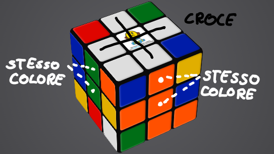
Fatta la croce bianca bisognerà, prima di tutto, posizionare la croce bianca verso il basso, poi trovare gli angoli mancanti, posizionarli nel posto giusto (per esempio fatta la croce trovo l'angolo con le faccie bianca, verde e rosso e lo posizionerò dove si trovano le faccie verdi e rosso) e fare l'algoritmo
R U R1 U1
(nella terza immagine i colori indicano l'algoritmo)
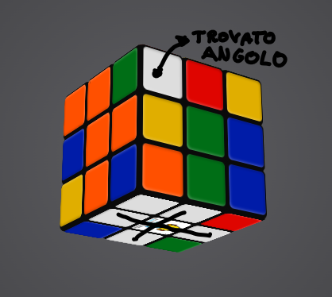 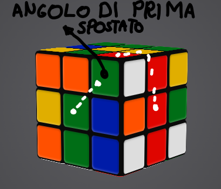 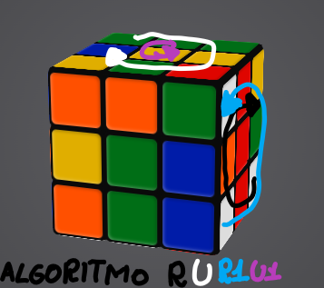
L'algoritmo va eseguito finchè l'angolo non si trova nel posto giusto.
SECONDO STRATO
Finito di fare il primo strato dovremmo avere una situazione simile.
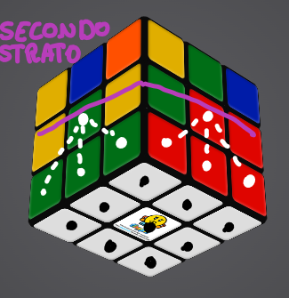 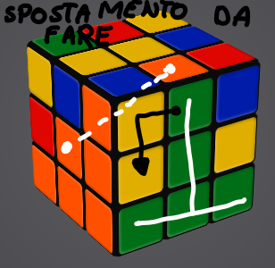 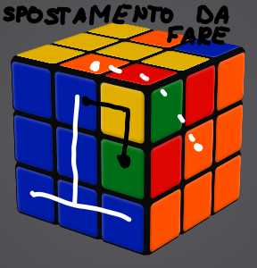
Per iniziare a fare il secondo strato bisognerà fare delle
T
al contrario trovando lo spigolo giusto da spostare come nella seconda immagine. Trovato lo spigolo da spostare e messo nella posizione giusta si possono distinguere due casi: se si deve spostare verso sinistra, come nella seconda immagine, allora bisognerà usare l'algoritmo
U1 L1 U L U F U1 F1
(bisogna tenere la faccia con la
T
al contrario da davanti), e il caso in cui si deve spostare verso destra come mostra la terza immagine e l'algoritmo sarà
U R U1 R1 U1 F1 U F
e si dovranno fare finchè tutto il secondo strato non sarà completato.
TERZO STRATO
Finito il secondo strato si dovrà avere una situazione del genere.
Questo è l'ultimo strato e per risolverlo si divide in tre fasi.
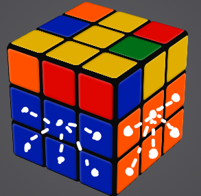
Prima Fase
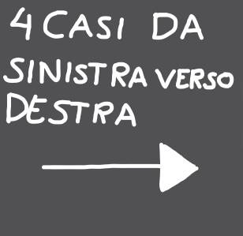 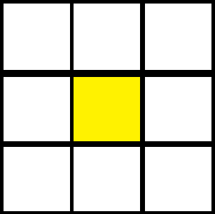 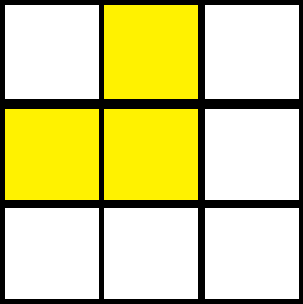 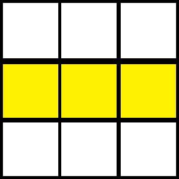 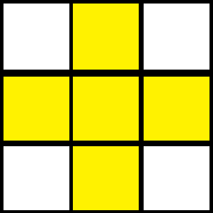
La prima fase consiste nel fare una croce gialla e per farla si deve fare un algoritmo, guardando in che caso ci si trova (immagini dalla 2 alla 5),
F R U R1 U1 F1
una volta fatto ci si trovarà al caso successivo e si dovrà rifare l'algoritmo finchè non si arriva al quarto caso (ultima immagine).
Seconda Fase
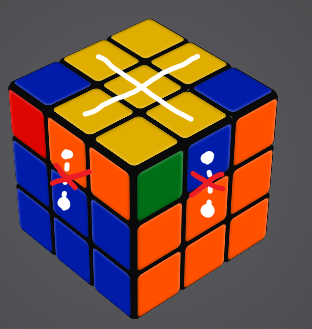 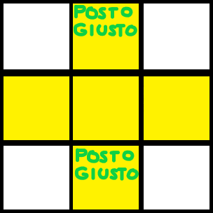 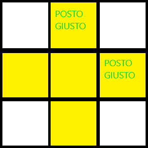 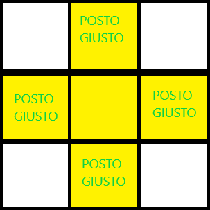
Finita la prima fase si avrà una croce gialla con gli spigoli che potranno non essere al posto giusto e la seconda fase consiste nello spostare questi spigoli e anche in questa fase ci sono 3 casi possibili (dall'immagine 2 alla 4) e si dovrà fare l'algoritmo
R U R1 U R U U R1
anche in questo caso quando si fa l'algoritmo si passerà al caso successivo fino ad arrivare all'ultimo
Terza Fase
Finita la seconda fase avremo la croce gialla con gli spigoli che si trovano al posto giusto e ora manca un ultimo passaggio che consiste nello spostare gli angoli e metterli al posto giusto.
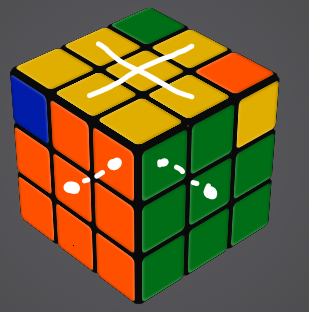 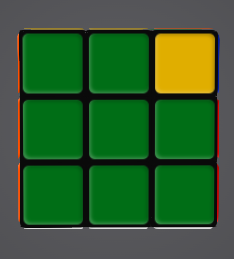
Se si ha un' angolo al posto giusto come nell'immagine allora basta guardare la faccia dell'angolo (nell'immagine la faccia verde) e tenere l'angolo alla nostra sinistra (seconda immagine) e fare l'algoritmo
R U1 L1 U R1 U1 L U
finchè tutti gli angoli saranno al posto giusto quando tutti gli angoli saranno al posto giusto bisognerà fare un'ultimo passaggio come nel primo strato ovvero giriamo il cubo per far si che la faccia gialla sia verso il basso e bisognerà fare l'algoritmo R U R1 U1 finche il primo angolo non sarà al posto giusto, quando il primo angolo sarà al posto giusto allora si gira la faccia gialla (facciamo la mossa
D = Down
) quindi la faccia in basso finchè non troviamo un altro angolo da far girare, fatti tutti gli angoli avremo finito i fare il cubo.